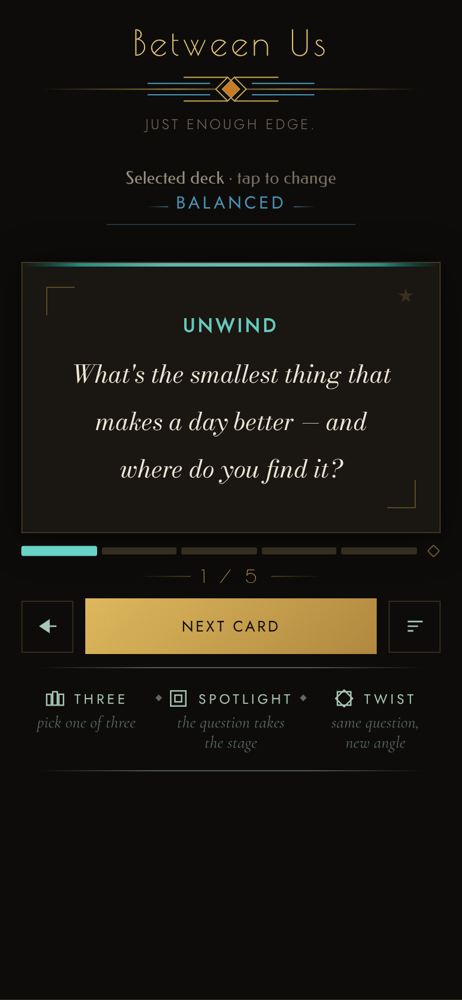
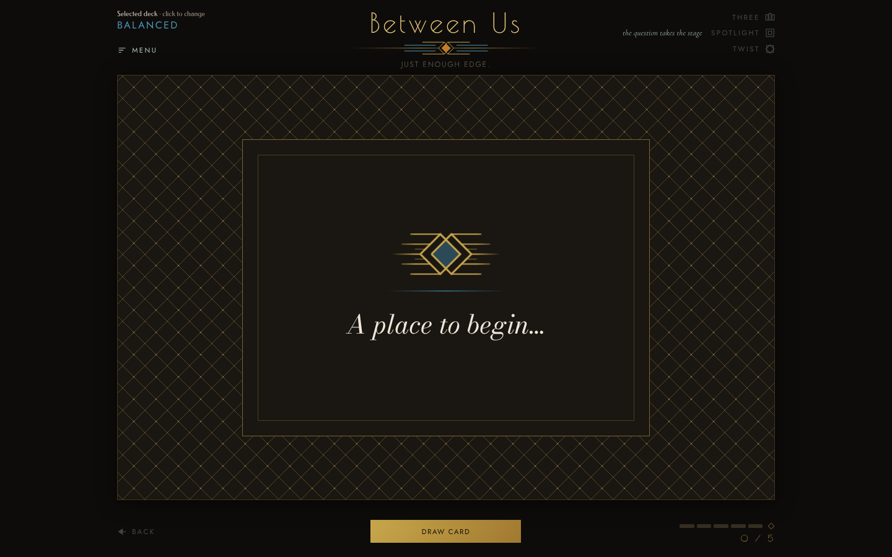
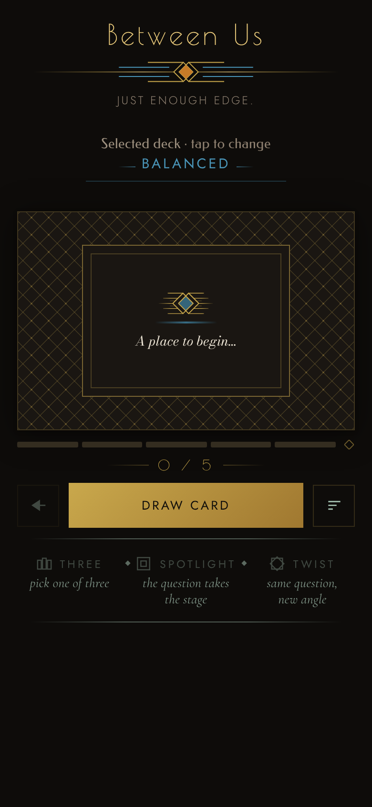
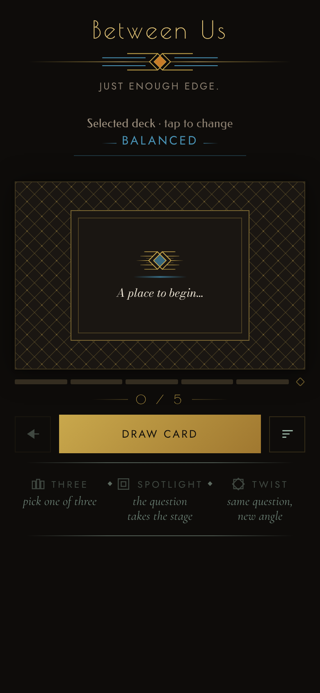
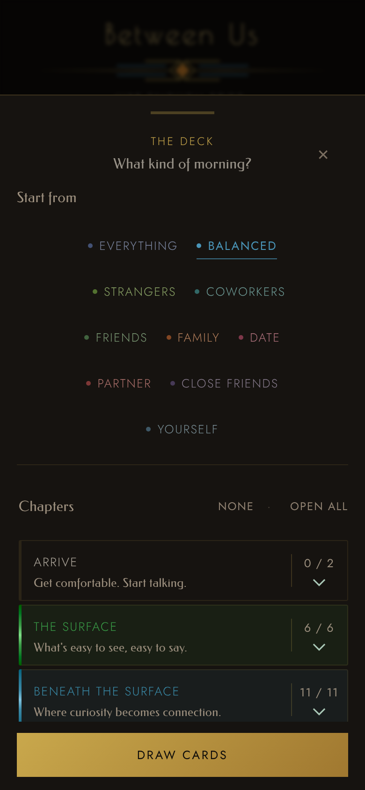
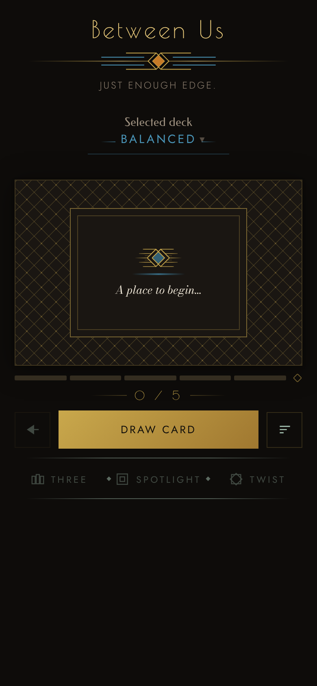
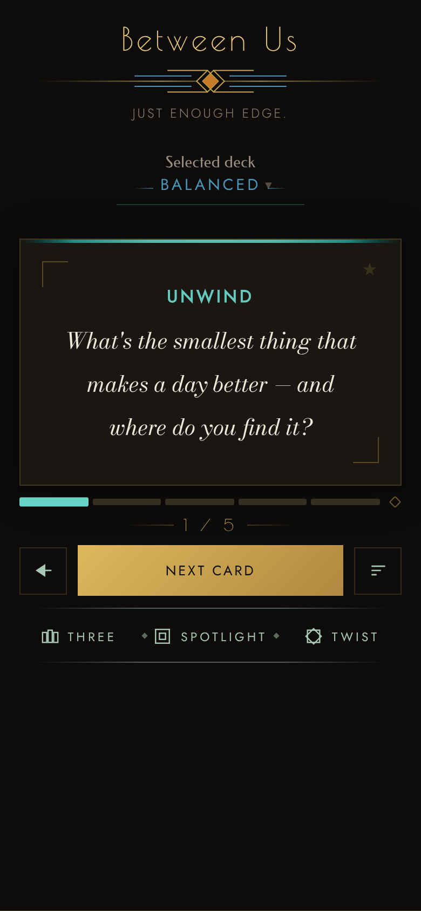

Dim helper text, five looks
Design-scan item 1. Built on main commit f19b2e5 ("Keeper agreement: animation fixes, design-scan fixes, two mockup rounds"). Each look is the real app with one stylesheet applied on top; screenshots are the real main screen and The Deck sheet at phone size (390 x 844, drawn at 2x), and the main screen at PC size (1440 x 900, with the pointer over Spotlight so its hint shows). Contrast is measured on the real background each line sits on: the page (#0e0c0a) for the main screen, the sheet (#161310) for The Deck. Goal: 4.5:1 or better.
- Question size check: no look touches the question or the card. Size and weight changes (look B only) apply to the helper lines themselves.
- Lines measured under 4.5:1 today on these two screens: the subtitle (3.93), "· tap to change" (3.93), the three hints (3.47), "Start from" (3.92) and "Chapters" (3.72). The chapter descriptions and counts in The Deck (#9c8f7e) already measure 5.85, so no look touches them. The Fixed Sets description measures the same 5.85.
- Measured under 4.5 but left alone, for you to know about: category and chapter colour text in The Deck (World 2.9 and "Between Us" chapter 3.71); the close cross in the sheet header (3.72, a control, not a helper line); the main menu's sub-lines (3.29, same colour token as the hints); the dimmed Three / Spotlight / Twist labels before the first draw (that is their disabled state). On PC the hints show only on hover and already read 8.79 in full celadon, so no look changes the PC hints.
- Before the first draw the three words are dimmed while their hints are not. In looks A and C the hints become clearly brighter than the dimmed words in that state; use the "in play" screenshot to judge the normal look.
Current
What the app shows now.
Tokens: Nothing changes.
| Line | Contrast now | Contrast here |
|---|---|---|
| Subtitle: "Just enough edge." | 3.93 | 3.93 |
| "· tap to change" | 3.93 | 3.93 |
| Three / Spotlight / Twist hints | 3.47 | 3.47 |
| Deck sheet: "Start from" | 3.92 | 3.92 |
| Deck sheet: "Chapters" | 3.72 | 3.72 |


A. Lighter tone, existing tokens only
Every line moves to a tone the app already has: the subtitle, "tap to change", "Start from" and "Chapters" to --btn-quiet (#8f8171); the three hints to --celadon-soft (celadon at 74%, #819689, so they stay in their celadon family). No size or weight change, no new value.
Tokens: No token changes. The change is which existing token each line points at. Menu sub-lines stay as they are (3.29). Stylesheet: options/a-existing-tokens.css.
| Line | Contrast now | Contrast here |
|---|---|---|
| Subtitle: "Just enough edge." | 3.93 | 5.16 |
| "· tap to change" | 3.93 | 5.16 |
| Three / Spotlight / Twist hints | 3.47 | 6.21 |
| Deck sheet: "Start from" | 3.92 | 4.89 |
| Deck sheet: "Chapters" | 3.72 | 4.89 |

B. Smallest passing tone, plus a little presence
Two new tone values, each the smallest step that passes on the sheet as well: --celadon-hint #5b6b63 to #6f8579, and a new --text-helper #8c8071 for the warm grey lines. On top of that the three hints grow from 14 to 15 px (they were the smallest and thinnest text on the screen) and the subtitle goes from Jost 300 to 400.
Tokens: --celadon-hint changes value: it also colours the main menu's sub-lines (#menuDrawer .d-sub, nine lines), which go from 3.29 to 4.68 with it. --text-helper is new and used only by the four warm lines above. --muted, --muted-l and --btn-quiet are not touched. Stylesheet: options/b-step-and-presence.css.
| Line | Contrast now | Contrast here |
|---|---|---|
| Subtitle: "Just enough edge." | 3.93 | 5.06 |
| "· tap to change" | 3.93 | 5.06 |
| Three / Spotlight / Twist hints | 3.47 | 4.93 |
| Deck sheet: "Start from" | 3.92 | 4.80 |
| Deck sheet: "Chapters" | 3.72 | 4.80 |

C. One warm helper tone for everything
All helper lines, the three hints included, take the one existing lighter warm grey --muted-l (#9c8f7e). One tone for every helper line instead of three. The hints leave the celadon family, so under their celadon labels they read as a different colour. This is the strongest lift of the three tone options.
Tokens: No token changes. Menu sub-lines stay as they are (3.29). Stylesheet: options/c-one-warm-tone.css.
| Line | Contrast now | Contrast here |
|---|---|---|
| Subtitle: "Just enough edge." | 3.93 | 6.18 |
| "· tap to change" | 3.93 | 6.18 |
| Three / Spotlight / Twist hints | 3.47 | 6.18 |
| Deck sheet: "Start from" | 3.92 | 5.85 |
| Deck sheet: "Chapters" | 3.72 | 5.85 |

D. Rethink: the hint lines are not there
The three hint lines under Three / Spotlight / Twist and "· tap to change" are removed. What carries the meaning: the labels Three, Spotlight and Twist with their symbols (the row has no hint at all, so it also gets shorter), and a small caret after the preset name, which says "tap to open". Mockup only: the caret is a new element, drawn from the sheet's existing ▾ glyph. Kept, because they are a tagline and labels, not help: the subtitle (preset tagline), "Start from" and "Chapters", lifted to the A tone so they pass.
Tokens: No token changes. The first-use hints would not need their "taught" memory, and the menu's "Every hint back" row would have nothing to bring back; that is a follow-up if D is chosen. Stylesheet: options/d-rethink-no-hints.css.
| Line | Contrast now | Contrast here |
|---|---|---|
| Subtitle: "Just enough edge." | 3.93 | 5.16 |
| "· tap to change" | 3.93 | removed |
| Three / Spotlight / Twist hints | 3.47 | removed |
| Deck sheet: "Start from" | 3.92 | 4.89 |
| Deck sheet: "Chapters" | 3.72 | 4.89 |



Notes: the screenshots use a fixed random order so every look shows the same card. Look B's token change and look D's removal both reach beyond the two screens, as described under each. Fixes in the real build would edit the base rules in styles.css instead of laying a sheet over them.